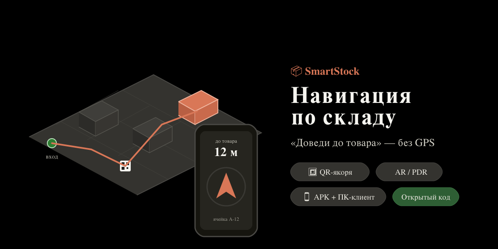

Навигация по складу «доведи до товара»: телефон показывает стрелкой, куда идти к ячейке с нужным товаром. Работает внутри помещения, где GPS бесполезен — вы сканируете QR-коды на стеллажах, а между ними телефон сам считает путь по своим датчикам, как шагомер.
Открытый код под лицензией MIT — работу можно проверить, а не принимать на веру. Всего четыре простых понятия: склад, ячейки, товар и навигатор.

Самостоятельный навигатор по складу: общий LAN-сервер и два клиента. Связан только со складом/ячейками/товаром — не тянет всю ERP.
Сканирует QR-метку на стеллаже, ведёт к нужной ячейке стрелкой и по плану. Между метками считает путь по датчикам телефона.
Программа для рабочего места кладовщика: смотреть план склада, ячейки и маршрут на большом экране.
Лёгкий сервер в сети склада: хранит план, ячейки, товары и точки-якоря. Работает без облака и без интернета.
Чем чаще наклеены QR-метки, тем точнее: каждый скан обнуляет накопленную ошибку. План склада берётся из SmartStock — тот же редактор: стеллажи, зоны, проходы. Как это устроено внутри →
Ввёл товар или отсканировал штрихкод — навигатор строит маршрут до его ячейки и ведёт стрелкой.
Точная привязка к месту по наклеенным меткам. Дёшево разворачивается: распечатал и расклеил.
Все расчёты навигации открыты и покрыты автотестами — работу можно проверить, а не принимать на веру. Подробности — на странице «Тех. детали».
Маршрут строится по реальному плану из SmartStock — комнаты, стеллажи, зоны-территории, проходы.
Сервер и клиенты работают в одной Wi-Fi-сети склада. Данные не уходят в облако.
Только склад, ячейки, товар и навигатор — модуль автономен и не тянет за собой всю ERP.
Indoor-навигация по датчикам телефона — это оценка, а не сантиметровая точность. Честно обозначим, на что рассчитывать.